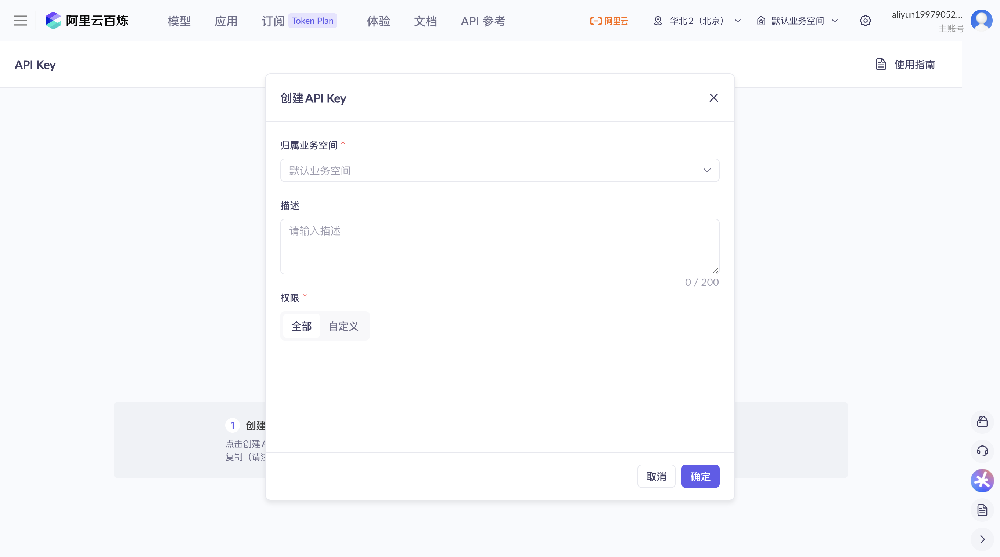
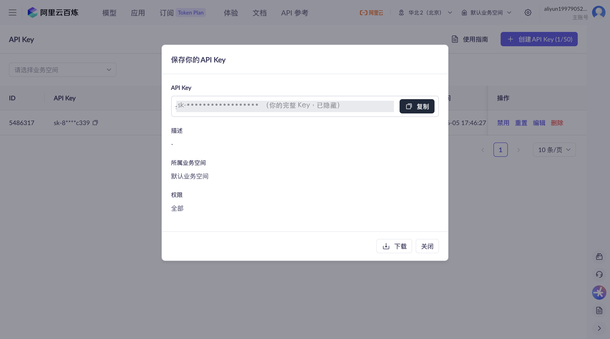
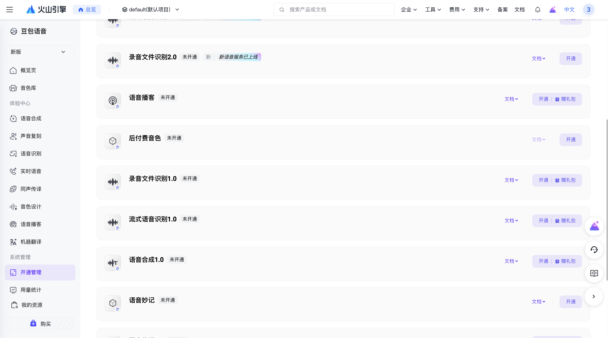
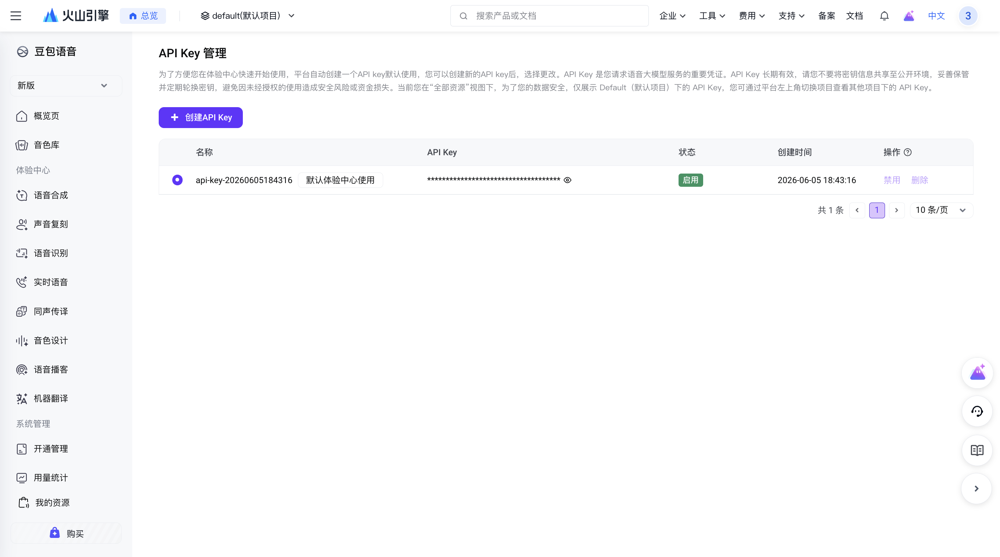

先说清楚：API Key 是啥？
你可以把它理解成一把「钥匙」——它让 Typefree 能用你自己账号下的 AI 服务（把话变成字、把字理顺）。
所以你要做的就三件事：① 去拿这把钥匙 ② 复制它 ③ 粘进 Typefree。拿钥匙不花钱，注册个账号、点几下就有了。
1
先选一个方案
Typefree 帮你干两件事：把话变成字（识别，必须）+ 把字理顺（润色，可选）。这两件事可以用阿里、也可以用火山（豆包）。给你两个推荐方案：
🏆 效果最好
豆包识别 + 阿里润色
要拿 2 把钥匙
识别用火山（豆包），识别效果最好，免费时长也更多（三档共约 60 小时）；润色用阿里。
适合：想要最好识别效果的人。
全用阿里
只拿 1 把钥匙
识别和润色都用阿里，一把钥匙全搞定，最省事。识别送 10 小时免费额度。
适合：想最省事、先快速上手的人。
选好了？按你选的方案往下看：全用阿里只看第 2 步；要用豆包识别的，再加看第 3 步。
2
拿阿里的钥匙
这把钥匙识别和润色都能用（同一个）。两个方案都需要它。
- 打开阿里百炼控制台。
↗ 打开阿里百炼
第一次会让你注册 / 登录阿里云账号、同意一个协议。同意后会自动开通、自动送你免费额度，不用单独申请任何东西。（控制台＝阿里的网站后台。）
- 点左侧菜单最下面的「API Key」。
- 新账号第一次会让你先做「实名认证」。点创建时如果弹出「您未完善个人基本信息」，点弹框里的「去完善」，按提示填你的真实姓名 + 身份证号（这是阿里的规定，大约 2 分钟）。填完回到这个页面、刷新一下就能创建了。
新账号第一次会弹这个提示。点「去完善」做实名认证（填真实姓名和身份证），2 分钟搞定。已经实名过的老账号看不到这个，直接跳下一步。
- 点页面正中紫色的「创建 API Key」按钮。
API Key 页正中间就是「创建 API Key」按钮（不是右上角）。
- 弹出的框里：业务空间选「默认业务空间」（一定要选，不选点确定会飘红），描述可以不填，权限保持「全部」，点「确定」。

选「默认业务空间」
点确定
业务空间选「默认业务空间」，描述可留空，权限保持「全部」，点确定。
- 创建成功会弹出完整钥匙（
sk- 开头），马上点「复制」存好！

点复制
或点下载存成文件
钥匙那行只显示这一次（图里已打码）。点「复制」粘到备忘录，或点「下载」存成文件。
⚠️ 重要：这串完整的钥匙只显示这一次，关掉窗口后就只能看到前后几位了。所以一定要当场复制、存到备忘录里。
3
拿火山（豆包）的钥匙
只有「豆包识别 + 阿里润色」方案才需要这一步。全用阿里的可以跳过。
- 打开火山语音控制台。
↗ 打开火山语音控制台（新版）
第一次会让你注册 / 登录火山引擎账号。
- 新账号先做个「实名认证」（火山要求实名后才能开通服务）。在「账号管理 → 实名认证」里选个人认证，用微信 / 抖音 APP 扫脸最快，手机扫一下脸，1 分钟搞定。
实名认证选「个人认证 → 微信/抖音 APP 扫脸认证」（图中红框），手机扫脸最快。已实名的老账号跳过这步。
- ⚠️ 关键一步：开通「录音文件识别 1.0」和「2.0」两个服务。火山和阿里不一样——识别服务要单独开通（都免费送额度）。在左侧「系统管理 → 开通管理」的「大模型」标签页里，找到这两个、各点一次「开通」：
·「录音文件识别 1.0」＝ App 的极速版 + 标准版（这两档都在它里面）
·「录音文件识别 2.0」＝ App 的 2.0
开通这两个，App 三档就都能用了。

① 录音文件识别2.0
开通
② 录音文件识别1.0
开通
系统管理 → 开通管理 →「大模型」标签页。把「录音文件识别 1.0」和「2.0」各点一次「开通」（都免费送额度）。1.0 里含极速版+标准版，2.0 是 2.0 档；漏开 App 用到时会失败。
- 开通后，去「API Key 管理」拿钥匙。
📍 这个页面在哪？在左侧导航栏往下划到底，「系统管理」分组里（「开通管理、用量统计」下面）就是「API Key 管理」，点它进入。
进入后，平台已自动建好一把（名字像「默认体验中心使用」），点钥匙后面的「👁 眼睛」看到完整的、点复制即可；或点左上「+ 创建 API Key」建个新的。

想建新的点这
点👁看完整→复制
「API Key 管理」页（入口见上方提示）。左上「+ 创建 API Key」可建新钥匙；默认那把点「👁 眼睛」看完整、复制即可。
- 打开 Typefree 设置 → 模型。
- 「语音识别」选服务商：用阿里就选「百炼（阿里）」，用豆包就选「火山引擎（豆包）」。
- 把刚才复制的钥匙粘进 API Key 框。
- 点「测试连接」，看到 ✓ 就成功了！
- 润色同理：「语音优化」选「百炼（阿里）」。如果识别也用了阿里，这里会自动复用同一把钥匙，不用再填。
找不到「API Key」菜单怎么办？
阿里：在控制台左侧菜单最下面。火山：在左侧「系统管理」下面的「API Key 管理」。
免费额度能用多久？会偷偷扣钱吗？
阿里 90 天、火山半年，到期作废、不是永久。⚠️ 阿里额度用完后会自动扣费，建议进阿里控制台打开「免费额度用完即停」开关，就绝不会偷偷扣钱了。
点「测试连接」失败？
八成是钥匙没复制全（前后带了空格），或者服务商选错了。重新复制完整钥匙、确认选对「百炼（阿里）」还是「火山引擎（豆包）」再试。
API Key：一把「钥匙」，让 App 能用你账号下的 AI 服务。
控制台：服务商的网站后台，管理你账号的地方。
百炼 / DashScope：阿里的 AI 平台，识别和润色都在它上面。
豆包语音 / 火山引擎：火山（字节）的语音 AI，识别用它。